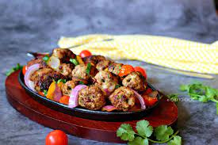

Galouti Kebabs are made from minced lamb legs.22-Aug-2017 Pakistan. Mixed with a blend of spices, ground beef is flattened into patties and shallow-fried until the exterior is charred and flavorful. Serve in a bun with pickled red onions or with a side of pita bread
